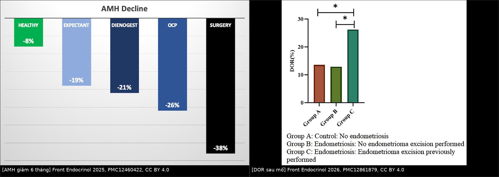
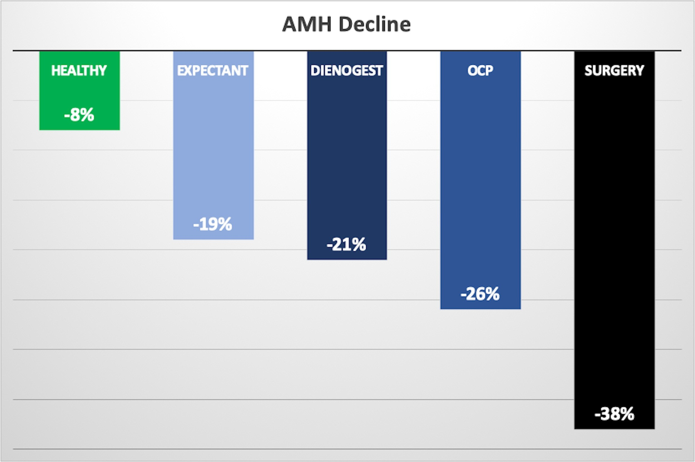
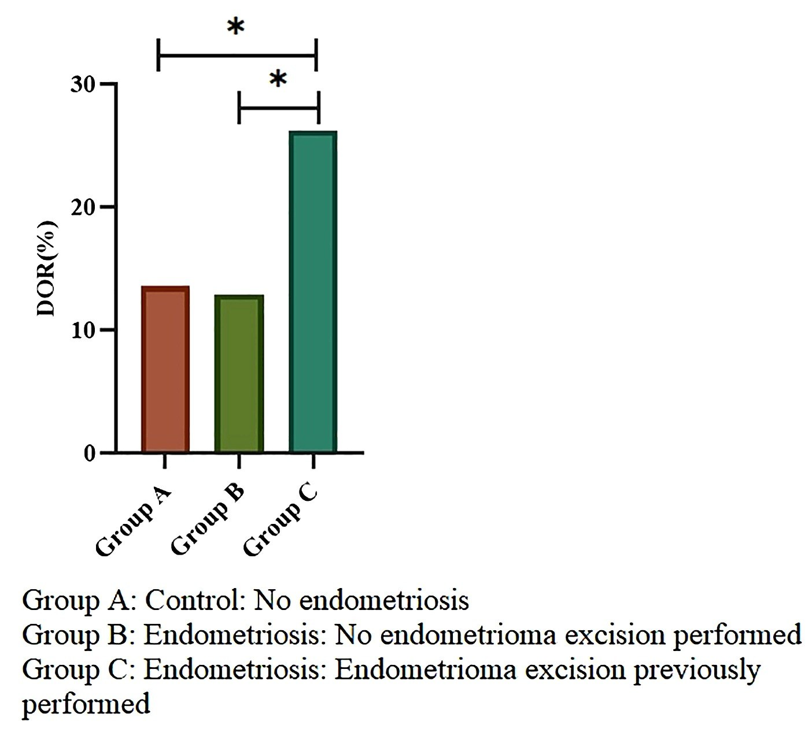

1606 — Endometrioma tái phát ở người hiếm muộn: mổ lại hay đi thẳng IVF/ICSI? / Recurrent endometrioma and infertility — repeat surgery or direct IVF?
Tags: pattern:lac-noi-mac pattern:tai-phat vung:buong-trung protocol:TVUS protocol:MRI-chau incidentaloma:nang-buong-trung
Mức chắc chắn (certainty): tổng hợp y văn (literature synthesis) — không có RCT nào so sánh trực tiếp "mổ lại" với "đi thẳng IVF/ICSI" ở endometrioma tái phát. Số liệu lấy từ: đoàn hệ IVF 394 ca, đoàn hệ 3.517 ca, meta-analysis 30 đoàn hệ, RCT sclerotherapy và guideline ESHRE 2022. Các câu suy luận từ bằng chứng gián tiếp được ghi rõ [suy luận].
1. Tổng quan bệnh học – cơ chế hình ảnh
- "Tái phát" hay "tồn dư"? Đây là câu hỏi đầu tiên và hay bị bỏ qua:
- ≤ 6 tháng sau mổ, nang ở đúng vị trí cũ → tồn dư (residual), không phải tái phát; không mổ lại.
- > 12 tháng, nang mới → tái phát thật (true recurrence).
- Định nghĩa kích thước không thống nhất: ≥ 2 cm (Lee 2020) hoặc ≥ 3 cm + đặc điểm siêu âm điển hình trên 2 chu kỳ liền (Nie 2026). Vì vậy luôn ghi định nghĩa khi so sánh tỷ lệ (bài 584).
- Tần suất nền: tái phát 21,5% ở 2 năm, 40–50% ở 5 năm; mổ lại 8,3% trong đoàn hệ 756 ca theo dõi trung vị 85,5 tháng (bài 584). Nghĩa là đa số người bệnh không cần mổ lần hai — mổ lại là ngoại lệ, phải có lý do.
- TẠI SAO mổ lại nguy hiểm hơn mổ lần đầu (bằng chứng mô học + dự trữ):
- Bóc nang lấy đi cả mô buồng trứng lành dính vào thành nang. Ở nang tái phát, mặt phẳng bóc (cleavage plane) bị xơ hóa, thành nang dày hơn: 1,7 ± 0,3 mm so với 1,1 ± 0,3 mm ở mổ lần đầu (Muzii 2015, 17 ca mổ lần đầu vs 11 ca mổ lại).
- Hệ quả: sau mổ lại, buồng trứng đã mổ có AFC và thể tích thấp hơn có ý nghĩa so với bên đối diện; khác biệt này không có ở nhóm mổ lần đầu (Muzii 2015).
- Cơ chế thứ hai: đốt cầm máu (bipolar) gây tổn thương nhiệt lan vào vỏ buồng trứng; mổ lại thường phải đốt nhiều hơn vì dính, mạch máu thay đổi.
- Định lượng mức giảm dự trữ — dùng để tư vấn:
- AMH giảm sau 6 tháng (nghiên cứu tiến cứu 80 ca + 20 chứng): mổ 38%, OCP 26%, dienogest 21%, theo dõi 19%, người khỏe 8% (PMC12460422). Nghĩa là bản thân endometrioma cũng làm giảm AMH, nhưng mổ là mức giảm lớn nhất.
- Tỷ lệ suy giảm dự trữ buồng trứng (DOR, AMH < 1,1 ng/mL) trong 3.517 ca IVF: 26,23% ở nhóm đã mổ bóc nang so với 12,90% ở nhóm có nang chưa mổ và 13,56% ở nhóm chứng; RR 2,03 (1,29–3,21) so với nang chưa mổ (PMC12861879). AMH trung vị: 1,97 (đã mổ) vs 2,70 (nang chưa mổ) vs 2,88 ng/mL (chứng).
- Nang hai bên: bóc nang hai bên làm AMH giảm 30–50% (dẫn trong PMC13472831).
- Kích thước nang có phải lý do mổ? Meta-analysis 16 nghiên cứu/1.484 phụ nữ, 30 đoàn hệ: đường kính endometrioma chưa mổ KHÔNG dự đoán AMH khi mô hình liên tục (β = 0,122; P = 0,35) hoặc theo tầng (< 4, 4–5, 5–6, > 6 cm; β = 0,245; P = 0,28); tuổi mới giải thích phần lớn khác biệt (R² = 58,2%) (PMC13283431). [suy luận] Vì vậy "nang to" một mình không là chỉ định mổ vì dự trữ; nhưng nang lớn vẫn có thể là vật cản tiếp cận chọc hút hoặc làm tăng nguy cơ biến chứng — chỉ định lúc đó là kỹ thuật, không phải nội tiết.
- Đi thẳng IVF có làm mất cơ hội sinh sống? Ở nang ≥ 4 cm, mổ trước IVF không cải thiện tỷ lệ sinh sống tích lũy: 52,4% vs 59,6%, aOR 0,77 (0,38–1,56), trong khi AMH thấp hơn (1,98 vs 3,16 ng/mL) và số noãn ít hơn (7 vs 11) (PMC13472831; chi tiết ở bài 1605). [suy luận] Nghiên cứu này thiếu lực để kết luận tương đương — chỉ nói không thấy lợi ích, không nói "hai cách bằng nhau".
- Tuổi là biến quyết định: mỗi năm tăng thêm, OR sinh sống tích lũy 0,92 (PMC13472831). Thời gian chờ mổ + hồi phục là thời gian mất đi của buồng trứng.
2. Mẫu hình + chẩn đoán phân biệt theo bối cảnh (Gamut)
Năm câu hỏi theo thứ tự — trả lời xong mới quyết định:
- Tồn dư hay tái phát thật? (mốc 6 và 12 tháng).
- Có chỉ định mổ tuyệt đối không? (xoắn, vỡ, áp-xe, nghi ác, đau kháng trị, nang tăng nhanh, cần mô bệnh).
- AMH/AFC và tuổi? (AMH < 1,1 ng/mL = DOR; < 0,5 ng/mL = dự trữ rất thấp).
- Nang có cản trở chọc hút/IVF không? (vị trí, hai bên, kích thước, tiếp cận qua thành âm đạo).
- Người bệnh ưu tiên gì? (giảm đau, sinh con sớm, tránh mổ, tránh nguy cơ ác tính).
Gamut theo bối cảnh:
- Tái phát không triệu chứng, nang < 4 cm, AMH bình thường: theo dõi + đi thẳng IVF nếu đủ chỉ định hỗ trợ sinh sản. Không mổ.
- Tái phát + đau kháng trị: điều trị nội tiết trước (dienogest, OCP liên tục, LNG-IUS — bài 584); chỉ mổ nếu thất bại hoặc không dung nạp. Mổ vì đau, không vì nang.
- Tái phát + AMH thấp (DOR) hoặc hai bên: tránh mổ; nếu buộc phải mổ → trữ noãn/phôi trước.
- Tái phát + nang lớn chắn đường chọc hút: cân nhắc sclerotherapy ethanol (không lấy mô bệnh) hoặc mổ có kiểm soát; không chọc hút đơn thuần (tái phát 30–80%; PMC13452471).
- Tái phát + nhú thật có mạch, thành dày không đều, tăng nhanh: mổ + mô bệnh, không sclerotherapy (bỏ sót ác tính).
- Tái phát + DIE/ứ dịch vòi trứng: xử trí theo bệnh nền (bài DIE, hydrosalpinx) — mổ nang đơn thuần không giải quyết nguyên nhân hiếm muộn.
- Tái phát khi đang có thai: decidualization giả ác, vỡ/xoắn — xử trí theo bài 583, không áp dụng logic mổ dự phòng.
3. Bảng so sánh phân biệt (ma trận đối chiếu)
| Chiến lược (entity) | Dữ liệu/hình ảnh điển hình | Chốt vào (rule-in) | Chốt loại (rule-out) | Gợi ý xác nhận |
|---|---|---|---|---|
| Mổ lại (repeat cystectomy) | Nang tái phát > 12 tháng, đau kháng trị, nghi ác, cản trở chọc hút | Có chỉ định tuyệt đối (xoắn/vỡ/áp-xe/nghi ác/đau kháng trị) hoặc nang chắn đường chọc hút | AMH < 1,1 ng/mL + nang hai bên + không đau → tránh mổ | AMH nền, MRI tiểu khung, mô bệnh; trữ noãn/phôi trước nếu AMH thấp |
| Đi thẳng IVF/ICSI | Nang ≥ 4 cm, hiếm muộn, không có chỉ định mổ tuyệt đối | Không đau nhiều + không nghi ác + tiếp cận chọc hút được | Đau kháng trị, nang tăng nhanh, nhú có mạch, áp-xe → phải xử lý nang trước | AMH, AFC, siêu âm theo dõi; tư vấn CLBR và tuổi |
| Sclerotherapy ethanol | Nang một ổ, dịch kính mờ, không nhú thật; nang tái phát | Nang tái phát đơn thuần + muốn tránh mổ + không nghi ác | Nhú thật/thành dày/tăng nhanh → không dùng (không có mô bệnh) | Siêu âm sau 3–6 tháng; AMH; theo dõi tái phát |
| Nội tiết (dienogest/OCP/LNG-IUS) | Đau chu kỳ, chưa muốn có thai ngay | Đau + chưa đi IVF ngay + không có chỉ định mổ | Đang mong con/đi IVF → không dùng để "bảo vệ" AMH | Hỏi huyết khối, đau nửa đầu, bệnh gan |
| Trữ noãn/phôi trước mổ | AMH thấp, nang hai bên, > 35 tuổi, phải mổ | Phải mổ + dự trữ đã thấp hoặc nguy cơ mất cao | Không có chỉ định mổ → không cần trữ vì mổ | AMH, AFC, tư vấn sinh sản trước mổ |

Trái: AMH giảm sau 6 tháng theo nhóm — mổ 38%, OCP 26%, dienogest 21%, theo dõi 19%, người khỏe 8% (PMC12460422). Phải: suy giảm dự trữ buồng trứng (AMH < 1,1 ng/mL) ở nhóm đã mổ bóc nang 26,2% vs 12,9% (nang chưa mổ) và 13,6% (chứng) (PMC12861879). Cả hai đều CC BY 4.0, ghép letterbox giữ nguyên khung.4. Protocol chụp + quy trình quyết định
A. Đánh giá một buổi khám (trước khi bàn mổ)
- TVUS + Doppler: 3 chiều (mm), số nang, một/hai bên, echo "kính mờ", có nhú thật có mạch không, dấu dính, "kissing ovaries", vị trí so với đường chọc hút.
- MRI tiểu khung khi không điển hình hoặc nghi DIE: T1, T2, T1 fat-sat (máu cũ vẫn sáng, mỡ mất tín hiệu), DWI/ADC, ± gadolinium. T2 shading = máu cũ nhiều đợt; nhú bờ trơn + ADC cao ở người có thai = decidualization (bài 583).
- AMH + AFC + FSH — không đo AMH trong vòng 3 tháng sau mổ (giảm sâu nhất 1–3 tháng, hồi phục một phần đến 12 tháng). 1 ng/mL = 7,14 pmol/L; DOR < 1,1 ng/mL.
- Đếm số lần mổ trước — đây là yếu tố nguy cơ độc lập với tổn thương buồng trứng; ghi vào hồ sơ.
B. Quy tắc tư vấn (phần quan trọng nhất)
- Nói rõ bằng chứng: không có RCT so sánh mổ lại vs IVF; bằng chứng gián tiếp cho thấy mổ làm giảm AMH/noãn và không cải thiện tỷ lệ sinh sống ở nang ≥ 4 cm.
- Nói rõ cái giá của mổ lại: thành nang dày hơn (1,7 vs 1,1 mm), mất mô lành nhiều hơn, AFC/thể tích buồng trứng giảm ở bên mổ — không hồi phục hoàn toàn.
- Nói rõ cái giá của chờ: mỗi năm trôi qua, OR sinh sống 0,92; mổ + hồi phục thường mất 2–3 tháng hoặc hơn nếu có biến chứng.
- Nói rõ nguy cơ của theo dõi: tái phát 40–50% ở 5 năm, nguy cơ vỡ/xoắn thấp nhưng nặng; không loại trừ ác tính nếu hình ảnh không điển hình.
- Ghi lại quyết định chung — đây là quyết định theo giá trị người bệnh, không có "đúng tuyệt đối".
C. Nếu vẫn chọn mổ — 4 quy tắc
- Trữ noãn/phôi trước nếu AMH thấp, nang hai bên, > 35 tuổi hoặc đã mổ ≥ 2 lần.
- Bóc nang đúng mặt phẳng, lấy tối thiểu mô lành; hạn chế bipolar, ưu tiên khâu buồng trứng hoặc chất cầm máu (hemostatic sealant).
- Network meta-analysis 21 RCT/1.519 ca: so với bóc nang đơn thuần, drainage + sealant giữ AMH tốt hơn (MD +0,96 ng/mL; 0,60–1,33), bóc nang + khâu (+0,69; 0,39–0,98), bóc nang + sealant (+0,37; 0,12–0,61) (PMC13186601). Đây là khác biệt AMH, chưa chứng minh tăng tỷ lệ sinh sống.
- Không đốt mù; kiểm tra kỹ cầm máu bằng khâu hoặc sealant.
- Sau mổ: nếu chưa đi IVF ngay → nội tiết dự phòng (bài 584) chỉ khi không mong con; nếu mong con → vào IVF sớm, không chờ nội tiết.
D. Sơ đồ quyết định
flowchart TD
A[Endometrioma tái phát + hiếm muộn] --> B{Tồn dư <= 6 tháng hay tái phát > 12 tháng?}
B -->|Tồn dư| C[Theo dõi, không mổ lại]
B -->|Tái phát thật| D{Có chỉ định mổ tuyệt đối?}
D -->|Có: xoắn, vỡ, áp-xe, nghi ác, đau kháng trị| E{AMH < 1,1 hoặc nang hai bên?}
E -->|Có| F[Trữ noãn/phôi trước, rồi mổ tiết kiệm mô]
E -->|Không| G[Mổ bóc nang + khâu/sealant, hạn chế bipolar]
D -->|Không| H{Nang cản trở chọc hút hoặc > 4 cm?}
H -->|Không| I[Đi thẳng IVF/ICSI - không mổ thường quy]
H -->|Có| J{Nghi ác hoặc nhú thật?}
J -->|Có| G
J -->|Không| K[Sclerotherapy ethanol hoặc mổ theo lựa chọn người bệnh]
F --> L[Vào IVF sớm sau hồi phục]
G --> L
K --> L
I --> L
5. Biến thể bình thường và cạm bẫy
- Bẫy 1 — "nang to thì phải mổ": đường kính không dự đoán AMH ở nang chưa mổ (PMC13283431); nang to chỉ là lý do kỹ thuật (chọc hút, nguy cơ biến chứng), không phải lý do nội tiết.
- Bẫy 2 — gọi tồn dư là tái phát: nang còn sau 3–6 tháng là tồn dư; mổ lại ngay sẽ lấy thêm mô lành mà không giải quyết gì.
- Bẫy 3 — đo AMH sai thời điểm: đo ngay sau mổ → đánh giá thấp dự trữ; chờ 3–6 tháng, tốt nhất 6–12 tháng nếu muốn giá trị ổn định.
- Bẫy 4 — nhầm nang máu/hoàng thể với tái phát: cả hai đều T1 sáng; T2 shading và bờ đều, không nhú gợi endometrioma; nang hoàng thể thường thay đổi sau 2–3 chu kỳ — theo dõi trước khi kết luận.
- Bẫy 5 — sclerotherapy không có mô bệnh: chỉ dùng khi hình ảnh điển hình, không nhú thật; nếu có thành phần đặc/tăng sinh mạch → mổ + mô bệnh.
- Bẫy 6 — "mổ lại để sạch trước IVF": không có bằng chứng mổ lại cải thiện tỷ lệ sinh sống; ngược lại, mất thêm dự trữ. Chỉ mổ khi có chỉ định thật.
- Bẫy 7 — bỏ qua DIE/ứ dịch vòi trứng: nang chỉ là một phần của bệnh; không đánh giá DIE/vòi trứng sẽ khiến IVF thất bại dù nang đã xử lý.
6. Tự lượng giá — Blind Quiz
Ca 1 — Nữ 34 tuổi, endometrioma tái phát 3 cm sau mổ 2 năm, AMH 1,4 ng/mL, đau nhẹ. Nhìn biểu đồ, mức giảm AMH nào là của nhóm mổ?

- Câu hỏi: Nhóm nào giảm AMH nhiều nhất? Vì sao? Điều này thay đổi tư vấn mổ lại thế nào?
Bấm để hiện đáp án
- Nhóm mổ (surgery) giảm 38% — cao nhất; theo dõi 19%, dienogest 21%, OCP 26%, người khỏe 8%.
- Cơ chế: lấy mô vỏ lành + tổn thương nhiệt khi cầm máu; ở nang tái phát, mặt phẳng bóc dày hơn nên mất mô nhiều hơn.
- Với AMH 1,4 ng/mL (gần ngưỡng DOR 1,1), mổ lại sẽ đẩy AMH xuống thấp hơn nữa → ưu tiên đi thẳng IVF hoặc sclerotherapy nếu nang cản trở chọc hút; nếu phải mổ → trữ noãn trước.
- Nguồn: Aslan K et al., Front Endocrinol 2025 (PMC12460422), CC BY 4.0.
Ca 2 — Nữ 31 tuổi đã mổ bóc nang 3 năm, nay nang 4,5 cm, AMH 0,9 ng/mL. Nhìn biểu đồ DOR, nhóm nào giống bệnh nhân này?

- Câu hỏi: Nhóm C khác nhóm B ở điểm nào? RR của DOR là bao nhiêu? Kết luận thực hành?
Bấm để hiện đáp án
- Nhóm C = đã mổ bóc nang, DOR 26,23%; nhóm B = có nang chưa mổ 12,90%; nhóm A = chứng 13,56%.
- RR 2,03 (1,29–3,21) so với nang chưa mổ — mổ là yếu tố nguy cơ độc lập cho DOR, không chỉ do bệnh nền.
- Bệnh nhân đã ở DOR (0,9 < 1,1) → không mổ lại nếu không có chỉ định tuyệt đối; ưu tiên IVF, tư vấn trữ noãn nếu còn chỉ định mổ.
- Nguồn: Li Y et al., Front Endocrinol 2026 (PMC12861879), CC BY 4.0.
Ca 3 — Nữ 38 tuổi, endometrioma tái phát hai bên 5 cm, đau vừa, AMH 0,6 ng/mL, muốn có con. Xử trí?
- Câu hỏi: Có nên mổ lại không? Nếu mổ thì phải làm gì trước? Nếu không mổ thì phương án nào?
Bấm để hiện đáp án
- Không mổ lại ngay. AMH 0,6 ng/mL + nang hai bên + 38 tuổi = nguy cơ mất dự trữ rất cao; đau vừa có thể kiểm soát nội tiết.
- Nếu buộc phải mổ (đau kháng trị, nghi ác, cản trở chọc hút): trữ noãn/phôi trước, mổ tiết kiệm mô (khâu/sealant, hạn chế bipolar).
- Nếu không mổ: đi thẳng IVF/ICSI, có thể sclerotherapy ethanol nếu nang cản trở chọc hút; theo dõi sát.
- Phản biện: bằng chứng mổ lại vs IVF là gián tiếp, không có RCT; quyết định phải cá thể hóa và ghi lại tư vấn.
- Nguồn ảnh: PMC12460422 + PMC12861879, CC BY 4.0 (ảnh ghép).
Bài liên quan chéo
- 1605 – Endometrioma trước khi mang thai: mổ dự phòng hay theo dõi?
- 584 – Dự phòng & theo dõi tái phát sau mổ endometrioma
- 585 – Nang lạc nội mạc & dự trữ buồng trứng
- 583 – Nang lạc nội mạc trong thai kỳ
- 533 – Theo dõi và bảo tồn sinh sản sau u buồng trứng
Ảnh
1606_AMH-giam-6-thang_PMC12460422.jpg,1606_DOR-sau-mo_PMC12861879.jpg— CC BY 4.0.composite_amh-va-mo-lai.jpg— ảnh ghép letterbox từ hai ảnh trên (CC BY 4.0).- Nguồn, giấy phép, tác giả: xem
images/CREDITS.mdvàsources.md.
Không dùng để chẩn đoán độc lập khi chưa có người hướng dẫn.